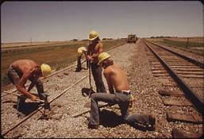

나는 강신우고 나sms
우가 매우 보고싶었습니다. 찬우야 보고싶다 노래를 지었습니다!
우리의 위대한 로동의 힘을 보여주고 김정은 조선로동당 위원장님을 우리의 국가 주석으로 삼읍시다. 또 반공자 및 친중을 무시
하는 세력들을 탄압하고 남조선 간첩이니 북조선으로 보내 김정은
 주어지는 엄벌을
- HTML이란 무엇인가
- CSS
- java script
- pink
- brown
- black
HTML 등의 마크업 언어로 작성된 문서가 실제로 웹사이트에 표현되는 방법을 정해주는 언어.
CSS의 C가 Cascading의 약자인데, 이는 상위 요소의 스타일 속성을 자손 요소들에게 상속시켜주는 모습이 DOM 트리구조에서 마치 폭포수처럼 내려가는 모습을 닮았기 때문이다.[1]